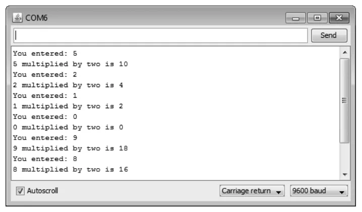

To demonstrate the process of sending and receiving data via the Serial Monitor, let’s dissect the following sketch. This sketch accepts a single digit from the user, multiplies it by 2, and then displays the result in the Serial Monitor’s output window.
// Project 13 - Multiplying a Number by Two
int number;
void setup()
{
Serial.begin(9600);
}
void loop()
{
number = 0; // zero the incoming number ready for a new read
Serial.flush(); // clear any "junk" out of the serial buffer before waiting
❶ while (Serial.available() == 0)
{
// do nothing until something enters the serial buffer
}
❷ while (Serial.available() > 0)
{
number = Serial.read() - '0';
// read the number in the serial buffer,
// remove the ASCII text offset for zero: '0'
}
// Show me the number!
Serial.print("You entered: ");
Serial.println(number);
Serial.print(number);
Serial.print(" multiplied by two is ");
number = number * 2;
Serial.println(number);
}The Serial.available() test in the first while statement at ❶ returns 0 if nothing is entered yet into the Serial Monitor by the user. In other words, it tells the Arduino, “Do nothing until the user enters something.” The next while statement at ❷ detects the number in the serial buffer and converts the text code that represents the data entered into an actual integer number. Afterward, the Arduino displays the number from the serial buffer and the multiplication results.
The Serial.flush() function at the start of the sketch clears the serial buffer just in case any unexpected data is in it, readying it to receive the next available data. Figure 5-5 shows the Serial Monitor window after the sketch has run.

Although you can now enter numerical data into the Serial Monitor for the Arduino to process, using integer variables limits the range of numbers available. We can use long variables to increase this range, as discussed next.